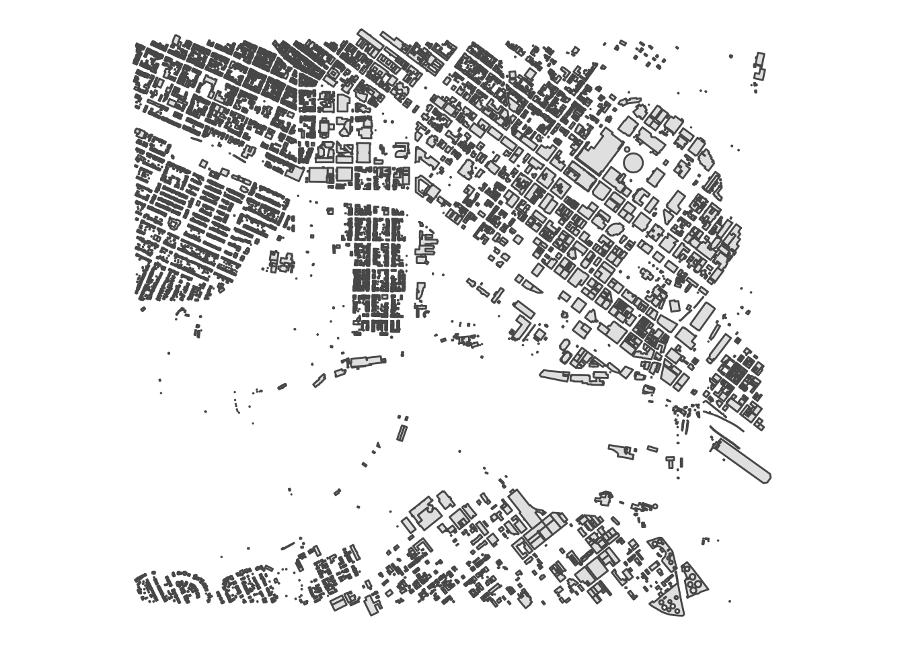
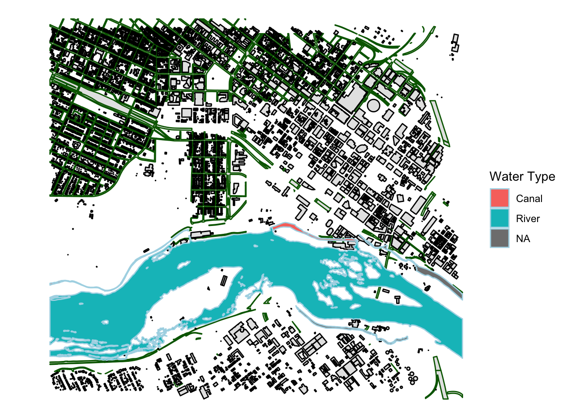

There is a lot of data contained in Shapefiles (ESRI formats) that we need to work with. Here we look at how to load them in, how to plot them, and how to save them.
The ShapeFile is an ubiquitous data format associated with ESRI. It is actually a collection of several file types, the most important of which include:
| Extension | Description |
|---|---|
| *.shp | The actual shape file containing the geometries |
| *.dbf | A database file with the data associated with the objects in the shape file |
| *.shx | An index file |
| *.prj | The file specifying the projection |
There may be many more files that are generated as part of the shapefile1
To read in a shapefile, we’ll use the sf (Simple Features) library. Most of the functions in this library have the prefix st_ to mimic the spatial operations used in PostGIS, so if you make the leap to working with a Postgres/PostGIS spatial database, you’ll feel right at home.
## Reading layer `structures' from data source `/Users/rodney/Desktop/DLab-Spatial/data/structures.shp' using driver `ESRI Shapefile'
## Simple feature collection with 8134 features and 5 fields
## geometry type: POLYGON
## dimension: XY
## bbox: xmin: -77.46736 ymin: 37.52097 xmax: -77.4254 ymax: 37.55161
## epsg (SRID): 4326
## proj4string: +proj=longlat +datum=WGS84 +no_defsAutomatically, the meta data about the object is presented. Notice that the structures object is actually a mix of two classes
## [1] "sf" "data.frame"making them rather easy to use in the normal workflow.
## SubType GlobalID RuleID_DS
## 1:6280 {0001D58D-128C-4968-ABEC-AB99D5B1FBBB}: 1 Min. :0.0000
## 2: 18 {0009F83B-E6F1-468D-A0D2-DDC0F505FF9A}: 1 1st Qu.:1.0000
## 3:1513 {001995D4-340F-49E2-B4C6-458A1F994535}: 1 Median :1.0000
## 4: 17 {002A31BF-D7A2-4E01-A003-81404B34AB6A}: 1 Mean :0.9962
## 5: 5 {002CB913-0A0A-42DA-9943-E9C2B4A43EA6}: 1 3rd Qu.:1.0000
## 6: 9 {002E3670-AC3A-4875-8FAF-DD57FF3DBE58}: 1 Max. :1.0000
## 7: 292 (Other) :8128
## Shape_Leng Shape_Area geometry
## Min. : 14.54 Min. : 5.7 POLYGON :8134
## 1st Qu.: 63.81 1st Qu.: 219.4 epsg:4326 : 0
## Median : 132.90 Median : 870.2 +proj=long...: 0
## Mean : 170.26 Mean : 2610.0
## 3rd Qu.: 185.29 3rd Qu.: 1519.3
## Max. :4308.17 Max. :360331.7
## 
You can use functions from the dplyr library to filter the contents of sf/data.frame objects. Here is an example where I plot the structures of SubType==1 as well as paved roads and different water sources.
## Reading layer `roads' from data source `/Users/rodney/Desktop/DLab-Spatial/data/roads.shp' using driver `ESRI Shapefile'
## Simple feature collection with 318 features and 4 fields
## geometry type: MULTIPOLYGON
## dimension: XY
## bbox: xmin: -77.46736 ymin: 37.52097 xmax: -77.4254 ymax: 37.55161
## epsg (SRID): 4326
## proj4string: +proj=longlat +datum=WGS84 +no_defs## Reading layer `water' from data source `/Users/rodney/Desktop/DLab-Spatial/data/water.shp' using driver `ESRI Shapefile'
## Simple feature collection with 9 features and 6 fields
## geometry type: POLYGON
## dimension: XY
## bbox: xmin: -77.46736 ymin: 37.52409 xmax: -77.4254 ymax: 37.5352
## epsg (SRID): 4326
## proj4string: +proj=longlat +datum=WGS84 +no_defslibrary(dplyr)
ggplot() +
geom_sf( data=roads %>% filter( Paved == 1), color="darkgreen") +
geom_sf( data=structures %>% filter( SubType == 1), color="black") +
geom_sf( data=water, color="lightblue", aes(fill=WaterBodyT)) +
labs( fill="Water Type") +
theme_void() +
coord_sf( datum=NA )
I know, it is kind of a mis-nomer to call it a shapefile if it is a collection of files AND most problematically, it basically violates most rules of Reproducible Research. But precedence is precedence.↩